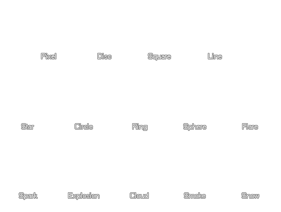

part_type_shape(ind, shape);
| Argumento | Descripción |
|---|---|
| ind | El índice del tipo de partícula para establecer. |
| shape | La forma de elegir. |
Devoluciones: N / A
Con esta función, puede establecer la forma del sprite que se usará para el tipo de partícula, siendo aceptables las siguientes constantes:
| Constante | Descripción |
|---|---|
| ind | El índice del tipo de partícula para establecer. |
| pt_shape_pixel | Un píxel de 1x1. (Esta es la configuración predeterminada). |
| pt_shape_disk | Un círculo lleno |
| pt_shape_square | Un cuadrado lleno |
| pt_shape_line | Una línea horizontal de 8px de ancho. |
| pt_shape_star | Una estrella llena de cinco puntos. |
| pt_shape_circle | Un círculo perfilado de 3px. |
| pt_shape_ring | Un círculo con un brillo interno (parece una burbuja). |
| pt_shape_sphere | Un círculo con un brillo exterior sólido en el centro, brillando hacia afuera. |
| pt_shape_flare | Un punto duramente brillante (se ve como una estrella real en la noche). |
| pt_shape_spark | Un efecto de chispa 'como una estrella con múltiples puntos desvaneciéndose. |
| pt_shape_explosion | Una nube cuadrada de humo requiere varios colores para parecerse a una explosión. |
| pt_shape_cloud | Una nube delgada requiere escalamiento y partículas múltiples para parecerse a una nube. |
| pt_shape_smoke | Una versión suave del efecto de explosión. Usa múltiples para crear una nube de humo. |
| pt_shape_snow | Una forma genérica de copo de nieve. |

global.p1 = part_type_create();
part_type_shape(global.p1, pt_shape_square);
part_type_size(global.p1, 1, 3, 0, 0);
part_type_scale(global.p1, 1, 1);
part_type_colour1(global.p1, c_white);
part_type_alpha2(global.p1, 1, 0);
part_type_speed(global.p1, 2, 4, 0, 0);
part_type_direction(global.p1, 0, 180, 0, 0);
part_type_gravity(global.p1, 0.20, 270);
part_type_orientation(global.p1, 0, 0, 0, 0, 1);
part_type_blend(global.p1, 1);
part_type_life(global.p1, 15, 60);
El código anterior establece el tipo de partícula indexado en la variable global "p1" a la forma de un cuadrado, luego establece varias otras propiedades de partícula.